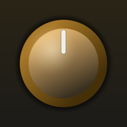
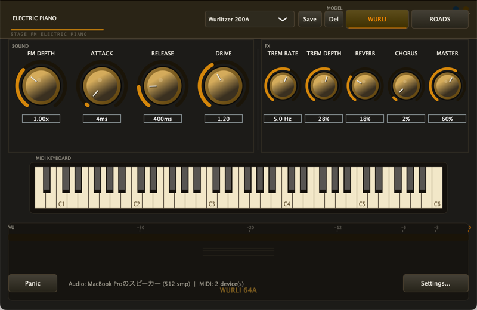
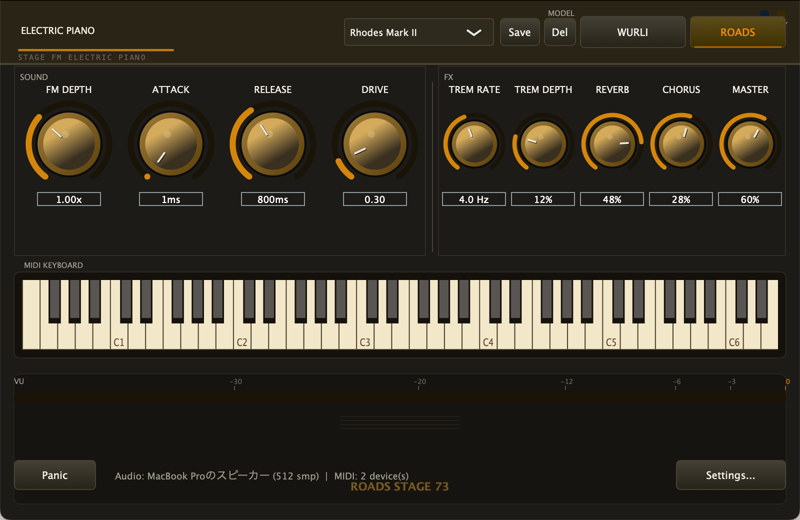

StageFM
Wurlitzer 200A / Rhodes Mark II を狙った FM エレクトリックピアノ音源
macOS スタンドアロン・アプリ

メイン画面（WURLI モデル選択時）
⬇ ダウンロード（最新版）
リンク先の Assets から StageFM-*-macOS.zip を取得してください
macOS 11 以降 ／ Apple Silicon・Intel 両対応（Universal）
スクリーンショット
WURLI — Wurlitzer 200A 系（リード/バーク）

ROADS — Rhodes Mark II 系（ベル/サスティン）
デモ演奏を聴く
WURLI — F マイナーの R&B ヴァンプ（リードの「バーク」が出る中〜強ベロシティ）
ROADS — サスティンペダルを踏んだバラード（ティンの伸び・共鳴・ノートオフのベル余韻）
どちらも本アプリの音声エンジンでオフライン書き出ししたデモです
（実機演奏の録音ではなく、自動演奏を同じ合成・エフェクト経路でレンダリング）。
デモ動画
画面は静止画＋上記デモ音源です（軽量化のため）。タップで再生します。
インストール手順
- ダウンロードした
StageFM-*-macOS.zip をダブルクリックで解凍
StageFM.app を「アプリケーション」フォルダにドラッグ- 一度ダブルクリック（「開けません」と出てOK。一旦キャンセル）
- アップルメニュー →「システム設定」→「プライバシーとセキュリティ」
を開き、下の方の 「"StageFM" は…」の横の「このまま開く」
ボタンをクリック → パスワード入力
- もう一度
StageFM.app を開く（以後はダブルクリックで普通に起動）
macOS 15 (Sequoia) では「右クリック→開く」が使えなくなり、
上の「システム設定 → プライバシーとセキュリティ →
このまま開く」が正規の手順です。
うまくいかない / ターミナルが使える人向け（確実）
上の手順で開けない場合は、ターミナル.app を開いて
次の1行を貼り付けて Enter（アプリは「アプリケーション」に入れた状態で）：
xattr -dr com.apple.quarantine /Applications/StageFM.app
ダウンロード時に付く「検疫」フラグを外すだけの操作です。以後は普通に起動できます。
なぜこの操作が必要？
Apple の有料署名・公証（年 $99）をしていないため、macOS が
「開発元を検証できません」と警告します。アプリ自体は ad-hoc 署名
済みで、上の一度きりの許可で問題なく動きます（中身が危険という
意味ではありません）。ソースは
GitHub で公開
しており、自分でビルドも可能です。
使い方（最低限）
- USB/DIN の MIDI キーボードを挿してから起動（画面下の鍵盤はマウスでも鳴らせます）
- ヘッダの WURLI / ROADS で音色切替、中央のボックスでプリセット保存/読込
- 音が出ないときは右下の Settings… でオーディオ/MIDI を確認